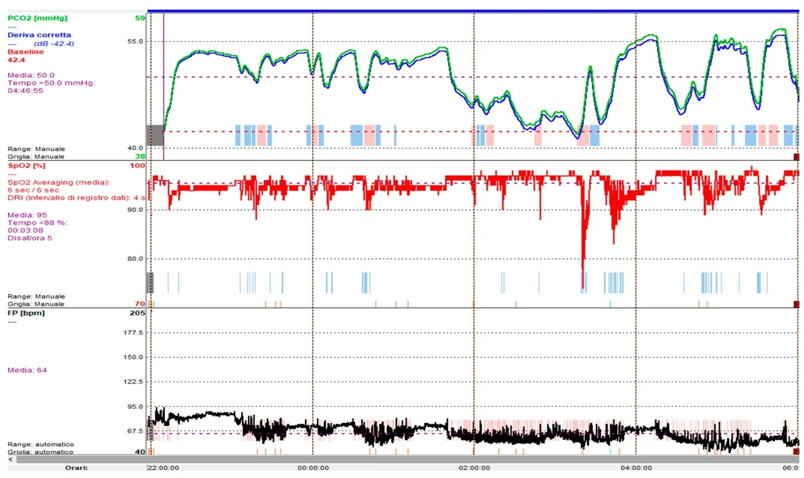
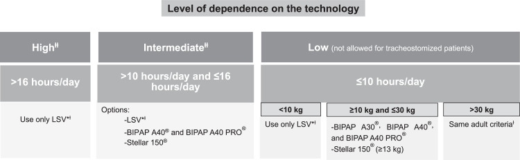
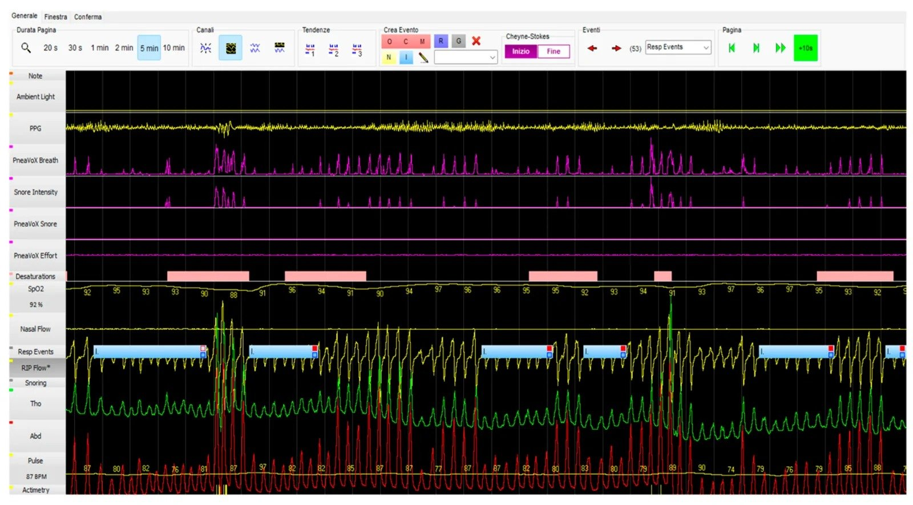

6109 — Trẻ thông khí không xâm nhập (NIV) tại nhà quanh mổ: giữ hay ngắt, giao diện nào, ngưỡng hậu phẫu / Children on home non-invasive ventilation around surgery
Tags: pattern:giam-thong-khi-khi-ngu pattern:suy-ho-hap-man vung:long-nguc vung:duong-tho score:AHI score:FVC protocol:NIV-tai-nha protocol:chu-phau-nhi
Mức chắc chắn (certainty): tổng hợp y văn (literature synthesis) — khuyến cáo hỗ trợ hô hấp dài hạn tại nhà ở trẻ của Hội Hô hấp Nhi Thụy Sĩ (Respiration 2026, PMC13152260, CC BY-NC 4.0); tổng quan thông khí tại nhà của Braz J Anesthesiol 2025 (PMC11872580, CC BY 4.0); 357 trẻ bệnh lý phức tạp mổ hàn cột sống với số liệu NIV hậu phẫu (Children 2026, PMC13605538, CC BY 4.0); 507 trẻ dùng NIV dài hạn (Alberta, Pediatr Pulmonol 2023, PMID 37701936); 1 ca nguyên văn SMA type 2 mổ Nissen robot (Front Surg 2026, PMC13635347, CC BY 4.0). Số liệu riêng cho "NIV tại nhà + phẫu thuật" ở trẻ còn mỏng — chỗ nào chưa có bằng chứng bài ghi rõ "chưa rõ".
Câu chốt: Trẻ đang NIV tại nhà không phải "trẻ khỏe vì đã có máy". Trong phòng mổ trẻ thường ổn — chỗ sập là 6–24 giờ sau rút ống, khi thuốc mê–opioid còn, trẻ nằm ngửa, đau không dám ho, và mất dần drive hô hấp khi vào REM. Vì vậy câu hỏi chu phẫu không phải "có cần thở máy không" mà là "rút ống sang cái gì, ở đâu, và ai theo dõi tcCO₂ trong đêm đầu".
1. Tổng quan bệnh học – cơ chế hình ảnh
- Dịch tễ (số phải nhớ): thông khí tại nhà ở trẻ vẫn hiếm nhưng không còn lẻ tẻ. Đoàn hệ dọc lớn nhất (Hà Lan, Eur J Pediatr 2025, PMC12568881) cho thấy 11% trẻ cai được hoàn toàn, 18% khởi đầu bằng NIV rồi phải chuyển sang thông khí xâm nhập (IPPV). Trong 507 trẻ dùng NIV dài hạn (Alberta, PMID 37701936), tuổi khởi trị trung vị 7,5 tuổi, và 93% có ít nhất 1 biến cố bất lợi liên quan NIV ngay lần theo dõi đầu.
- TẠI SAO giảm thông khí xuất hiện ĐÊM trước ngày: khi ngủ, đặc biệt REM, trương lực cơ liên sườn và cơ phụ mất → thông khí chỉ còn hoành; ở trẻ bệnh cơ–thần kinh hoành đã yếu, độ nhạy trung tâm với CO₂ giảm, nên PaCO₂ tăng trước khi SpO₂ giảm. Định nghĩa thực hành (AASM, dẫn trong PMC13152260): giảm thông khí khi ngủ = pCO₂ > 50 mmHg trong > 25% tổng thời gian ngủ; ngưỡng nhạy hơn cho bệnh cơ–thần kinh là tcCO₂ > 50 mmHg trong > 2% thời gian ngủ (dùng trong PMC13605538).
- TẠI SAO phim ngực của trẻ NIV "trông tệ hơn" mà trẻ vẫn ổn: NIV giữ PEEP 4–6 cmH₂O → FRC tăng, đáy phổi mở; khi tháo máy đi mổ, phổi xẹp lại trong 10–20 phút → xẹp đáy hai bên + giảm thể tích trên phim chụp ngay sau rút ống không đồng nghĩa thất bại, mà là mất PEEP. Ngược lại, khí trong dạ dày nhiều là dấu của nuốt khí (aerophagia) do mask/áp lực — trên phim dễ bị đọc nhầm thành liệt ruột/tắc ruột.
- Vật lý của mạch NIV tại nhà (giải thích vì sao không được "đổi máy tùy tiện"): máy tại nhà dùng mạch một nhánh có rò chủ ý (single-limb circuit with intentional leak); CO₂ được thải qua lỗ rò và qua van thở. Nếu dán kín mask/mũi (để "khỏi rò") → CO₂ tái hít; nếu rò quá nhiều → Vt sụt, không đồng bộ máy–bệnh nhi, mà số Vt trên máy lại "đẹp". Vì vậy khi chuyển sang máy ICU (mạch hai nhánh, không rò chủ ý) phải tính lại Vt/áp lực, không bê nguyên cài đặt.
- Cài đặt chuẩn (dùng để đối chiếu khi trẻ vào mổ): khởi đầu IPAP 8 / EPAP 4 cmH₂O, sau chuẩn độ IPAP 10–14 / EPAP 4–6 cmH₂O, Vt 6–10 mL/kg; CPAP cho OSA 8 ± 3 cmH₂O; nhịp dự phòng đặt quanh nhịp thở của trẻ 2–3 nhịp. NIV > 12–16 giờ/ngày là dấu hiệu cần cân nhắc chuyển sang xâm nhập (PMC13152260).
- TẠI SAO hậu phẫu là cửa sổ nguy hiểm: thuốc mê còn tồn lưu + opioid giảm drive + đau làm ức chế ho + nằm ngửa làm FRC giảm → giảm thông khí xuất hiện muộn hơn giờ hồi tỉnh. Số liệu thực: 357 trẻ mổ hàn cột sống (PMC13605538) — 20 trẻ (5,6%) đang NIV trước mổ, 11 trẻ được khởi trị NIV/CPAP ngay trong đợt chu phẫu (10 ca chỉ định dựa trên kết quả đa ký/polygraphy); hậu phẫu 48 trẻ (13%) cần NIV, 33 (9%) thở máy xâm nhập, 22 (6%) CPAP, 1 trẻ mở khí quản sau 3 lần rút ống thất bại; nằm PICU trung vị 4 ngày. Ở nhóm bệnh cơ–thần kinh (n = 34): 35% cần NIV hậu phẫu, 15% cần thở máy xâm nhập.
- Số liệu "đắt" cho hội chẩn: ở 48 trẻ vẹo cơ–thần kinh (BMJ Paediatr Open 2025, PMC11836852), 54,1% có biến chứng sớm, và dùng NIV tại nhà là yếu tố dự báo độc lập, làm tăng 1,8 ngày PICU (chi tiết ở 043).

*Hình: trẻ bệnh cơ–thần kinh, theo dõi tcCO₂ + SpO₂ + nhịp tim qua đêm trước mổ. TcCO₂ trung bình 50,0 mmHg, thời gian tcCO₂ > 50 mmHg = 4 giờ 46 phút; SpO₂ trung bình 95%, thời gian < 88% = 3 phút 08 giây, 5 cơn giảm bão hòa/giờ. Đây là "đơn thuốc" để chỉnh NIV trước ngày mổ. Nguồn: Basilicata S và cộng sự, Children 2026;13(9):1170, PMCID PMC13605538, CC BY 4.0.*2. Mẫu hình + chẩn đoán phân biệt theo vị trí (Gamut)
- Mẫu hình cần nhận ra: "trẻ có máy thở ở nhà, mang theo mặt nạ + máy vào viện để mổ một bệnh khác". Việc đầu tiên không phải đọc phim mà là phân nhóm theo lý do cần NIV — vì lý do quyết định rủi ro hậu phẫu:
- Tắc nghẽn khi ngủ (OSA): béo phì, Prader–Willi, Down, hội chứng đầu–mặt. Mổ amidan/VA có thể chữa khỏi → phải chuẩn độ lại sau mổ, không mặc định dùng tiếp cài đặt cũ.
- Bệnh cơ–thần kinh (NMD): SMA, loạn dưỡng cơ Duchenne, thoái hóa cơ. Nguy cơ cao nhất (35% cần NIV hậu phẫu), dễ sặc, ho yếu → cần MIE/cough assist.
- Trung tâm (CCHS) và giảm thông khí trung ương: không "tự thở" khi ngủ → không được ngắt NIV qua đêm dù trẻ tỉnh táo ban ngày.
- Bệnh phổi–đường thở: BPD/non tháng, loạn sản phế quản–phổi, hẹp dưới thanh môn, mềm sụn khí quản.
- Thành ngực: Jarcho–Levin, loạn sản xương, di chứng mở ngực.
- Nhánh theo LOẠI MỔ (quyết định giữ/ngắt NIV):
- Mổ đường thở trên (amidan, VA, nội soi thanh quản): NIV qua mask che mũi-miệng sau mổ tăng nguy cơ sặc và chướng dạ dày → ưu tiên HFNC hoặc NIV mũi với theo dõi sát.
- Mổ bụng–tiêu hóa (Nissen, mở gastrostomy): nuốt khí và căng dạ dày làm hạn chế hoành → giảm dung tích; cần mở van dạ dày và hạ áp lực đỉnh.
- Mổ cột sống: nguy cơ cao nhất (số liệu mục 1) → rút ống sang NIV có kế hoạch, không "thử rút ống".
- Mổ tim: NIV hậu phẫu an toàn và có lợi ở trẻ (giảm công thở, tránh đặt lại ống) — nhưng sau sửa teo thực quản NIV nguy hiểm (nguy cơ sặc/rò) (J Cardiothorac Vasc Anesth 2022, PMID 33893015).
- Nhánh theo hình ảnh (khi trẻ xấu đi sau mổ): xẹp phổi do mất PEEP / viêm phổi hít / tràn khí màng phổi (hiếm, nhưng có khi dùng MIE áp lực cao) / chướng dạ dày do nuốt khí / phù thanh quản sau rút ống / tổn thương da do mask.
- Gamut "trẻ NIV tại nhà vào viện vì khó thở" — 4 câu hỏi chốt: (1) Máy có chạy đúng không (pin, mạch rò, mask cũ rách)? (2) Cài đặt còn phù hợp không (trẻ đã tăng cân/tuổi)? (3) Có bệnh mới chồng (viêm phổi, xẹp phổi, tràn khí)? (4) Có biến chứng của chính NIV (loét da, midface hypoplasia, chướng dạ dày, sặc)?

*Sơ đồ: chọn thiết bị NIV/xâm nhập tại nhà ở trẻ theo mức phụ thuộc (số giờ/ngày), có mở khí quản hay không và cân nặng — lý do "máy của người lớn" không dùng được cho trẻ < 10 kg. Nguồn: Fagondes SC và cộng sự, Braz J Anesthesiol 2025;75(3):844595, PMCID PMC11872580, CC BY 4.0.*3. Bảng so sánh phân biệt (ma trận đối chiếu)
| Thực thể (entity) | Hình ảnh / dấu hiệu điển hình | Chốt vào (rule-in) | Chốt loại (rule-out) | Gợi ý xác nhận |
|---|---|---|---|---|
| Giảm thông khí còn tồn lưu sau mê/opioid | Phim ngực bình thường hoặc giảm thể tích nhẹ; không đám mờ | tcCO₂ > 50 mmHg (hoặc tăng > 10 mmHg so nền) + SpO₂ tụt khi ngủ, tỉnh táo ban ngày | Đám mờ mới một thùy + sốt → nghĩ viêm phổi thay vì chỉ giảm thông khí | Capnography/tcCO₂ qua đêm, khí máu mao mạch; đối chiếu cài đặt NIV tại nhà |
| Xẹp phổi do mất PEEP | Giảm thể tích đáy phổi hai bên, mờ hình đĩa, không có phế quản hơi trung tâm | Xẹp xuất hiện sau khi tháo NIV, cải thiện sau vài giờ NIV/Vt lớn hơn | Đông đặc có phế quản hơi + sốt/CRP tăng → nhiễm trùng | So phim trước mổ (đang NIV) với phim sau rút ống; siêu âm phổi |
| Viêm phổi hít (aspiration) | Đám mờ thùy dưới phải hoặc hai bên, mới, kèm tràn dịch nhỏ | Sặc rõ (nôn, cho ăn sớm) + đám mờ mới trong 24–48 giờ | Đám mờ mờ nhạt, đối xứng quanh rốn phổi + không sặc → nghĩ phù do áp lực/mất PEEP | X-quang lặp lại 24–48 giờ; cấy đờm khi có đờm |
| Chướng dạ dày do nuốt khí (aerophagia) | Bóng hơi dạ dày lớn, đẩy hoành lên, không mức dịch–hơi điển hình, không giãn ruột non | Trẻ NIV mask mũi-miệng/áp lực cao; xẹp đáy phổi hai bên do hoành cao | Mức dịch–hơi + giãn ruột → nghĩ tắc ruột/liệt ruột thật | Mở van dạ dày/đặt sonde; không kết luận tắc ruột chỉ vì bóng hơi lớn |
| Tràn khí màng phổi | Đường màng phổi + mất mạch phổi ngoại vi, có thể tràn khí trung thất | Đường màng phổi mới ở trẻ vừa MIE áp lực cao/thở áp lực | Đường mờ, không đổi giữa 2 phim → nếp da/gấp mạc | Siêu âm phổi (mất lung sliding) + phim nghiêng; lâm sàng |
| Tổn thương da/midface do mask | Loét sống mũi/gò má, hằn dây; hẹp hàm trên khi dùng nhiều năm | Vết loét đúng vị trí đè của mask đang dùng | Ban lan tỏa + sốt → nghĩ nhiễm trùng da thay vì do mask | Khám da mỗi lần thăm khám; đổi mask luân phiên điểm tì |
- Ảnh đối chiếu bổ sung:
images/6109_niv-tai-nha-quanh-mo_Polygraphy_PMC13605538-F3.jpg(đa ký hô hấp trước mổ) dùng làm "phim nền chức năng" cho ca 2 ở mục (6).
4. Protocol chụp/theo dõi + hệ phân độ và ngưỡng xử trí
- Trước mổ — 6 việc, mỗi việc có ngưỡng:
- Xác nhận chỉ định NIV còn đúng: đa ký/polygraphy gần nhất; ngưỡng AHI > 5/giờ, ODI > 10/giờ, SpO₂ min < 88%**, **tcCO₂ > 50 mmHg > 2% thời gian ngủ (PMC13605538); AASM: pCO₂ > 50 mmHg > 25% TST.
- Đo chức năng hô hấp nếu làm được: FVC < 50% dự đoán = nhóm nguy cơ cao (043). Ở trẻ không hợp tác, thay bằng capnography khi ngủ + ho (cough peak flow).
- Kiểm tra thiết bị: pin dự phòng, mạch rò, mask dự phòng cùng cỡ, MIE nếu ho yếu. Máy tại nhà không được đưa vào phòng MRI (không an toàn trong từ trường) — chuyển sang máy ICU/bệnh viện.
- Không ngắt NIV qua đêm trước mổ ở trẻ có giảm thông khí trung ương/bệnh cơ nặng; cho ăn theo khuyến cáo nhịn đói và hút sạch miệng trước khi đặt mask.
- Kế hoạch rút ống ghi trước trong hồ sơ: "extubate to NIV" với cài đặt cụ thể, không ghi "theo diễn biến".
- Đặt chỗ PICU nếu: NMD + FVC < 50%**, **NIV > 12 giờ/ngày, mổ cột sống/ngực–bụng lớn, hoặc đã từng thất bại cai máy.
- Trong mổ: nếu cần mê toàn thân → đặt nội khí quản (mask NIV trong phòng mổ vừa rò vừa che tầm nhìn, không an toàn khi thông khí kém). Với thủ thuật ngắn dưới an thần, có thể giữ NIV mũi nhưng phải có capnography và người có thể đặt ống ngay. Tránh succinylcholine ở bệnh cơ (ca SMA2, PMC13635347).
- Ngay sau rút ống (30 phút đầu): rút ống trực tiếp lên NIV với cài đặt tại nhà (ca nguyên văn: IPAP 16 / EPAP 13 cmH₂O, FiO₂ 21%, rút ống sau 2 giờ 43 phút hậu phẫu, không biến cố trong 24 giờ — PMC13635347); nếu không dung nạp/không đạt Vt → NIV mũi hoặc CPAP, không "cố mask mũi-miệng" ở trẻ vừa mổ đường thở.
- Ngưỡng hậu phẫu phải ghi trong hồ sơ (dùng chung): tcCO₂ > 50 mmHg kéo dài, SpO₂ < 90%** khi thở khí trời, **nhịp thở tăng > 2 SD theo tuổi, thất bại 2 lần thử cai NIV trong 1 đêm, hoặc thất bại nuốt/ứ đờm → leo thang hỗ trợ, không chờ "sáng mai".
- Theo dõi sau ra viện: khám lại 1–3 tháng sau khởi trị rồi mỗi 3–6 tháng; sau MỖI can thiệp (kể cả phẫu thuật) phải làm lại đa ký/polygraphy để xác nhận cài đặt còn hiệu quả (PMC13152260) — đây là điểm hay bị bỏ: trẻ mổ xong về nhà với cài đặt của 2 năm trước.
flowchart TD
A[Trẻ đang NIV tại nhà cần mổ] --> B{Có giảm thông khí trung ương<br/>hoặc bệnh cơ nặng?}
B -->|Có| C[Giữ NIV qua đêm trước mổ<br/>đặt PICU + kế hoạch rút ống sang NIV]
B -->|Không| D{FVC dưới 50% hoặc NIV trên 12 giờ/ngày?}
D -->|Có| C
D -->|Không| E{Mổ đường thở trên<br/>hoặc sửa teo thực quản?}
E -->|Có| F[Cân nhắc HFNC thay mask<br/>theo dõi sặc và chướng dạ dày]
E -->|Không| G[Rút ống theo quy trình thường<br/>NIV dự phòng nếu SpO2 tụt khi ngủ]
C --> H[Capnography + tcCO2 đêm đầu]
F --> H
G --> H
H --> I{tcCO2 trên 50 mmHg<br/>hoặc SpO2 dưới 90%?}
I -->|Có| J[Leo thang hỗ trợ<br/>kiểm tra rò, mask, MIE]
I -->|Không| K[Trả cài đặt tại nhà<br/>hẹn đa ký lại sau 1-3 tháng]
- Hệ phân độ dùng trong bài (không có RADS riêng cho "NIV quanh mổ"): phân tầng nguy cơ theo 3 biến — (1) mức phụ thuộc NIV (< 8 giờ/ngày = thấp; 8–12 = trung bình; > 12–16 giờ/ngày hoặc đã mở khí quản = cao), (2) FVC (≥ 70% / 50–70% / < 50%), (3) loại mổ (ngoại vi < đường thở trên < bụng–ngực < cột sống). ≥ 2 mức "cao" → PICU + rút ống sang NIV có kế hoạch.
5. Biến thể bình thường và cạm bẫy
- Biến thể bình thường: (1) Bóng hơi dạ dày lượng vừa ở trẻ NIV mask là bình thường, nhất là sau bú/ăn; (2) đường màng phổi mờ do nếp da/gấp mạc ở trẻ nhỏ, không đổi giữa 2 phim; (3) tim to "giả" do phim chụp nằm ngửa ở trẻ NIV (hoành cao) — đối chiếu phim trước mổ.
- Cạm bẫy 1 — "đã có NIV tại nhà nghĩa là ổn định": 93% trẻ dùng NIV dài hạn có ≥ 1 biến cố bất lợi; hay gặp nhất là tổn thương da 20% và rò khí không chủ ý 19% (PMID 37701936). Rò khí làm Vt hiển thị sai → "máy báo tốt" mà trẻ vẫn giảm thông khí.
- Cạm bẫy 2 — đọc "cải thiện" từ con số trên máy: khi rò tăng, máy tăng áp lực bù, Vt hiển thị vẫn đủ; dấu hiệu thật là tcCO₂ tăng và giấc ngủ phân mảnh, không phải con số Vt.
- Cạm bẫy 3 — chướng dạ dày bị đọc thành tắc ruột: tỷ lệ nuốt khí ở trẻ NIV tại nhà "chưa rõ" vì trẻ hiếm khi kêu (PMC11921066); xử trí là hạ áp lực đỉnh, tư thế nửa ngồi, mở van dạ dày, không phải mổ.
- Cạm bẫy 4 — mask mũi-miệng ở trẻ vừa mổ đường thở/bụng: mask mũi-miệng/full-face tăng nguy cơ sặc, loét da và kém dung nạp; mask mũi an toàn hơn vì vẫn thở được nếu máy hỏng (PMC13152260).
- Cạm bẫy 5 — coi thường biến chứng mạn của mask: hẹp hàm trên (midface hypoplasia) 3–37%, cao hơn ở trẻ nhỏ; triệu chứng mũi 5–38%; ~1/3 trẻ có biến chứng thiết bị. Vì vậy luân phiên mask và khám răng–hàm định kỳ là một phần của "chu phẫu" ở trẻ sắp mổ hàm mặt.
- Cạm bẫy 6 — bỏ qua ca "êm": trong đoàn hệ 357 trẻ, ca duy nhất phải mở khí quản lại nằm ở nhóm đa ký BÌNH THƯỜNG, không phải nhóm rối loạn (PMC13605538). Đừng dùng "đa ký bình thường" để hạ mức theo dõi ở trẻ bệnh cơ nặng.
6. Tự lượng giá — Blind Quiz ngay trên trang tĩnh (không cần app)
Ca 1 — Trẻ 11 tuổi bệnh cơ–thần kinh, NIV tại nhà 8 giờ/đêm, sắp mổ hàn cột sống
- Gợi ý lâm sàng: ban ngày tỉnh táo, khí máu mao mạch bình thường; mẹ nói trẻ "ngủ hay vặn mình".
- Câu hỏi: (1) Ba bất thường trên bản ghi? (2) Có nên hoãn mổ để chỉnh NIV không? (3) Ngưỡng nào phải ghi vào kế hoạch hậu phẫu?
Bấm để hiện đáp án (findings + chẩn đoán)
- Dấu hiệu: tcCO₂ trung bình 50,0 mmHg, > 50 mmHg trong 4 giờ 46 phút; SpO₂ trung bình 95%, 5 cơn giảm bão hòa/giờ, thời gian < 88% = 3 phút 08 giây; nhịp tim trung bình 64/phút.
- Chẩn đoán: giảm thông khí khi ngủ mạn tính (ngưỡng nghiên cứu: tcCO₂ > 50 mmHg > 2% TST) — "êm" trên khí máu ban ngày là đặc trưng, vì CO₂ chỉ tăng khi mất trương lực cơ ở REM.
- Xử trí: chỉnh NIV trước mổ (tăng IPAP theo chuẩn độ, kiểm tra rò) thay vì hoãn mổ vô thời hạn; ghi ngưỡng hậu phẫu tcCO₂ > 50 mmHg / SpO₂ < 90% và đặt PICU.
- Nguồn ảnh: Basilicata S và cộng sự, Children 2026;13(9):1170, PMCID PMC13605538, CC BY 4.0.
Ca 2 — Trẻ 6 tuổi Down + béo, NIV tại nhà vì OSA, mổ amidan–VA

- Gợi ý lâm sàng: ngáy to, ngưng thở khi ngủ; mask mũi; SpO₂ nền 95%.
- Câu hỏi: (1) Dấu hiệu chính trên bản ghi? (2) Sau mổ amidan–VA nên giữ NIV cũ hay chuẩn độ lại? (3) Vì sao không chọn mask mũi-miệng ngay sau mổ?
Bấm để hiện đáp án (findings + chẩn đoán)
- Dấu hiệu: chuỗi cơn giảm bão hòa xuống 87–88% kèm sự kiện hô hấp (Resp Events) lặp lại, RIP flow giảm từng đợt, nhịp tim dao động 74–97/phút.
- Chẩn đoán: OSA (đa ký/polygraphy); sau cắt amidan–VA, chỉ định NIV có thể mất → phải đa ký lại, không mặc định giữ cài đặt cũ.
- Vì sao: mask mũi-miệng sau mổ họng tăng sặc, chướng dạ dày và kém dung nạp; mask mũi cho phép thở tự nhiên nếu máy hỏng.
- Nguồn ảnh: cùng bài PMC13605538, CC BY 4.0.
Ca 3 — Nữ 23 tuổi SMA type 2 (khởi phát ở tuổi nhi), NIV 9 giờ/đêm, mổ Nissen robot vì trào ngược nặng
- Gợi ý lâm sàng: FVC 25%, FEV₁ 22% dự đoán; mở miệng < 5 mm, cổ cố định; đã từng đặt ống thất bại bằng đèn soi trực tiếp và video.
- Câu hỏi: (1) Vì sao không dùng succinylcholine? (2) Rút ống ở đâu và lên cái gì? (3) Ba ngưỡng theo dõi 24 giờ đầu?
Bấm để hiện đáp án (findings + chẩn đoán)
- Kỹ thuật: đặt ống qua mũi bằng ống soi mềm 3,7 mm với ống nội khí quản 5,5 mm có cuff, thành công 1 lần, < 2 phút, không tụt bão hòa; tránh succinylcholine (nguy cơ tăng kali/phản ứng bất thường ở bệnh cơ).
- Rút ống: sau 2 giờ 43 phút, rút trực tiếp lên NIV dự phòng IPAP 16 / EPAP 13 cmH₂O, FiO₂ 21%; không biến cố hô hấp trong 24 giờ; ra viện ngày hậu phẫu 5.
- Ngưỡng: tcCO₂ > 50 mmHg, SpO₂ < 90%, ho yếu/ứ đờm (cân nhắc MIE) — và đa ký lại trước khi trả cài đặt tại nhà.
- Nguồn ca: Wong MCY và cộng sự, Front Surg 2026;13:1964655, PMCID PMC13635347, CC BY 4.0.
Bài liên quan chéo
- 043 – Chăm sóc hô hấp quanh mổ & cai máy ở trẻ TIS/EOS
- 048 – Hội chứng lồng ngực không đủ (TIS/VEPTR)
- 600 – Tổng quan Nhi khoa
- 6121 – Rò tụy sau mổ tụy ở trẻ
Ảnh
6109_niv-tai-nha-quanh-mo_Capnography_PMC13605538-F4.jpg— capnography + oximetry qua đêm (CC BY 4.0, PMC13605538).6109_niv-tai-nha-quanh-mo_Polygraphy_PMC13605538-F3.jpg— đa ký hô hấp trước mổ (CC BY 4.0, PMC13605538).6109_niv-tai-nha-quanh-mo_So-do_PMC11872580-F3.jpg— sơ đồ chọn thiết bị (CC BY 4.0, PMC11872580).- Nguồn + giấy phép từng ảnh:
images/CREDITS.md; link bài gốc:sources.md.
Không dùng để chẩn đoán độc lập khi chưa có người hướng dẫn.